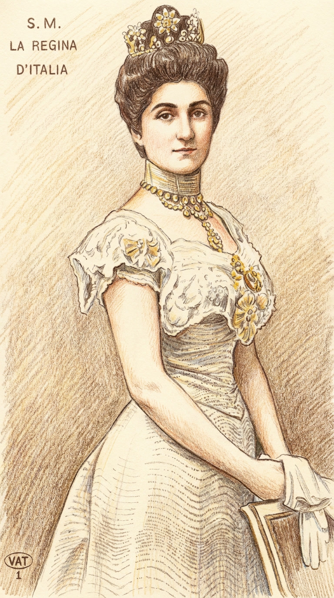
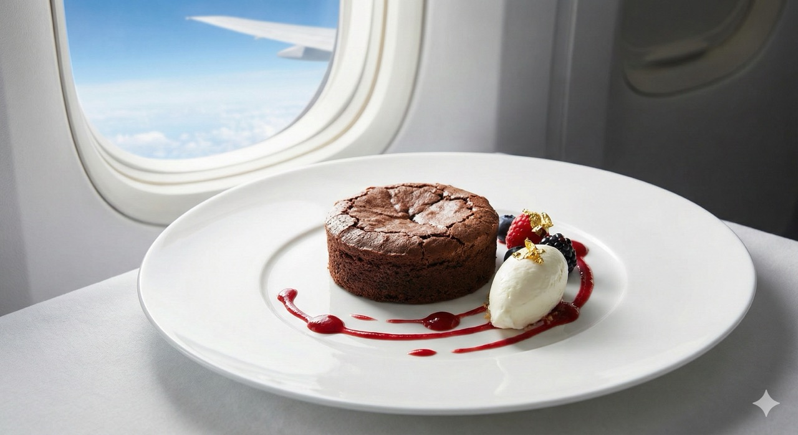

Un Cuore Tenero
che ha Conquistato il Mondo
Da omaggio a una Regina a eccellenza nei cieli: la storia della Torta Tenerina Rizzati.
Da omaggio a una Regina a eccellenza nei cieli: la storia della Torta Tenerina Rizzati.

Tutto ebbe inizio nei primi anni del '900, quando l'arte pasticcera ferrarese volle omaggiare una donna speciale: Elena Petrovich del Montenegro, sposa di Re Vittorio Emanuele III.
La Regina Elena era conosciuta per la sua bontà d'animo e la sua empatia verso il popolo, tanto da essere definita la "regina dal cuore tenero".
I maestri pasticceri crearono per lei un dolce che ne rispecchiasse l'anima: una sottile e friabile "corazza" esterna che proteggeva un cuore dolce, cremoso e fondente. Nacque così la "Torta Montenegrina", che il popolo ferrarese, innamorato della sua consistenza unica, ribattezzò affettuosamente Tenerina.

A Ferrara, la bontà di una Tenerina si misura con una parola antica: deve essere "taclenta".
Un termine dialettale che descrive quella sensazione unica di scioglievolezza, quasi adesiva al palato, data dall'equilibrio perfetto tra burro e cioccolato. La ricetta Rizzati rispetta rigorosamente questa tradizione, eliminando la farina per esaltare la purezza del cacao.
Il risultato è un dolce naturalmente privo di glutine, dove l'assenza di lievito permette al cuore di rimanere umido e avvolgente, proprio come vuole la storia.
Per portare un classico ferrarese nel futuro, serviva una visione nuova. Dopo la rinascita del marchio nel 2015 sotto la guida della famiglia Matteucci, Rizzati Ferrara ha scelto una strada coraggiosa: il biologico per convinzione.

"Penso che un sogno così non ritorni mai più..."
Ma per la Tenerina Rizzati, il sogno è diventato realtà. Siamo orgogliosi di annunciare che la nostra Tenerina non è più solo il dolce di Ferrara, ma un'ambasciatrice dell'eccellenza italiana nel mondo.
Grazie all'accordo con LSG, la Tenerina Rizzati viaggia in Business Class sulle ali di Lufthansa. La compagnia ha scelto le nostre mini tenerine biologiche per coccolare i passeggeri più esigenti, riconoscendo in quel cuore morbido un'esperienza di lusso ad alta quota.
Dalle rive del Po ai cieli internazionali: la "Regina" è tornata a viaggiare.
